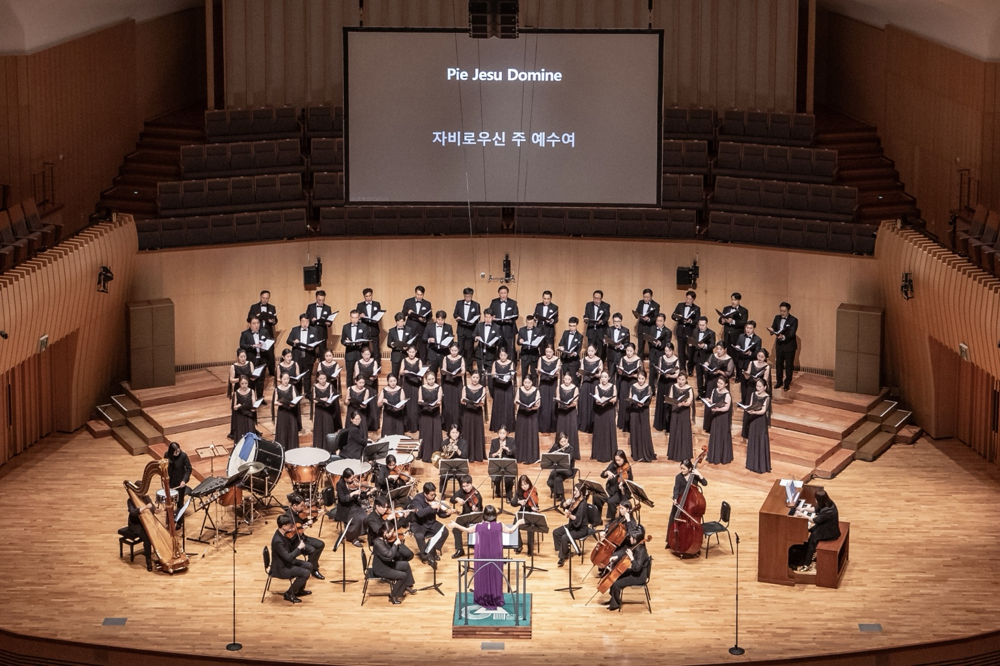

Bringing Art into Life
オーケストラ紹介
Orchestra Lartife
Orchestra Lartife は2024年に創立されたプロフェッショナル・オーケストラです。韓国国内外の主要な市立・プロオーケストラで活躍する演奏家が集っています。
クラシック音楽の本質と深みに根ざし、伝統的なレパートリーから新しい企画公演まで、観客と身近に呼吸する多彩な舞台をお届けします。
READ MORE →
2024
創立
40+
プロフェッショナル奏者
7
主要プロジェクト
2
市立合唱団との共演
指揮者
キム・パンジュ
PANJU KIM
Music Director & Founder of Orchestra Lartife
ウィーン国立音楽大学でトランペットを専攻し Magister 課程を修了。ソウル大学校音楽大学大学院で指揮を学び、指揮者・教育者・オーケストラ奏者として国内外で幅広く活動しています。
READ MORE →
主な公演
公演アーカイブ


ORCHESTRA LARTIFE
ニュース・プレス
お問い合わせ
ORCHESTRA LARTIFEお問い合わせ
Bringing Art into Life